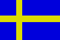

|
Länderinformationen Schweden
1. Das Wichtigste auf einen Blick2. Sehens- und Hörenswertes
3. Politik & Gesellschaft
4. Schmeckenswertes
5. Medien
6. Reisetipps
1. Wissenswertes
|  | Hier
haben wir die wichtigsten Zahlen und Fakten zum Königreich
Schweden (Konungariket Sverige) und der schwedischen Sprache
zusammengetragen. |
 Die
schwedische Sprache
Die
schwedische Sprache
Das
Schwedische gehört zu den nordischen Sprachen, deren Wurzel zu
den indoeuropäischen Sprachen gezählt werden kann. Andere
indoeuropäische Sprachzweige sind unter anderem der germanische
(zum Beispiel Deutsch und Englisch), der slawische (zum Beispiel
Russisch und Polnisch) und der baltische (zum Beispiel Lettisch und
Litauisch) Sprachzweig.
Sie werden wahrscheinlich Einiges verstehen können, wenn Sie mit der schwedischen Sprache konfrontiert werden, denn das Schwedische hat viele Gemeinsamkeiten mit dem Deutschen. Das Alphabet und die Schreibweise ist sehr ähnlich, nur die Aussprache unterscheidet sich – teilweise relativ stark – von der deutschen.
Im Schwedischen wird das lateinische Alphabet verwendet – somit werden Sie beim Erlernen der schwedischen Sprache etwas entlastet. Nur ist die Reihenfolge etwas anders als im Deutschen, so dass Sie beim Aufsagen des Alphabets acht geben müssen.
Auf die Frage „Talar Ni svenska? – Sprechen Sie Schwedisch?“ werden Ihnen insgesamt mehr als 9 Millionen Menschen mit „Ja!! – Ja!“ antworten.
Die schwedische Sprache, svenska språket, wird heute von etwa 8,2 Millionen Menschen in Schweden als Muttersprache gesprochen. In Finnland wird sie von etwa 300.000 Menschen als Muttersprache gesprochen – aus geschichtlichen Gründen hat das Schwedische dort als zweite Amtssprache einen offiziellen Status. Weitere Länder, in denen Schwedisch von Immigranten gesprochen wird, sind außer Finnland noch Kanada und Australien.
 Hoch-
und Umgangssprache
Hoch-
und Umgangssprache
Im Schwedischen, wie auch in den meisten Sprachen, gibt es Dialekte. Man kann die schwedischen Dialekte in sechs große Hauptdialekte aufteilen: sydsvenska mål, götamål, östsvenska mål, gotländska mål, sveamål und norrländska mål. Der sydsvenska mål wird im Süden Schwedens, im südlichen Teil von Götaland, gesprochen, der götamål wird im sonstigen Götaland gesprochen. Auf der größten Insel Schwedens Gotland wird der Dialekt gotländska mål gesprochen. Svealand heißt die mittlere Gegend von Schweden, wo auch die Hauptstadt Stockholm liegt. Dort wird sveamål gesprochen. Norrland ist der nördlichste Teil von Schweden. Dort sprechen die Menschen norrländska mål. Schließlich wird in Finnland der Dialekt östsvenska mål gesprochen. Österland hieß die Gegend in der Zeit der schwedischen Herrschaft in Finnland.
In Schweden kann man im Zusammenhang von Dialekten eigentlich nicht davon sprechen, dass sie vom Aussterben bedroht wären, denn die Dialektsprecher pflegen ihre Sprache. Zusätzlich benutzen sie die Standardsprache.
Ein interessanter Aspekt zur Sprachpolitik in Schweden ist, dass dort einige von Minderheiten gesprochene Sprachen staatlich anerkannt sind. Solche Sprachen sind Finnisch, Tornedalfinnisch, Samisch, Romani, Jiddisch und die schwedische Gebärdensprache.
Nun aber genug von der Sprache und los geht’s zum Königreich Schweden. Im folgenden Abschnitt finden Sie interessante Fakten zu Schweden sowie Informationen zu landestypischen Begebenheiten.
 Einwohner
Einwohner
In
Schweden leben knapp 9,2 Millionen Einwohner – und so ist
Schweden damit bevölkerungsärmer als Baden-Württemberg.
An Minderheiten lassen sich in Schweden vor allem Finnen finden. Auch
Flüchtlinge verschiedener Nationalitäten haben dort
Zuflucht gefunden.
Die
meisten Schweden sprechen neben Schwedisch noch Fremdsprachen wie
Englisch, Spanisch, Deutsch oder Französisch.
Das Durchschnittsalter der schwedischen Bevölkerung liegt bei rund 40 Jahren und ist damit ähnlich wie in Österreich, Deutschland oder der Schweiz.
Die durchschnittliche Lebenserwartung liegt bei rund 78 Jahren (Männer) und 82 Jahren (Frauen).
 Fläche
Fläche
Das
Staatsgebiet Schwedens umfasst eine Fläche von rund 450.000 km²
und ist damit flächenmäßig etwa so groß wie
Deutschland und Österreich zusammen. In Europa ist Schweden das
drittgrößte Land.
Von der Fläche ist rund die Hälfte bewaldet. Somit kann man Schweden als sehr grün bezeichnen. Eine andere Farbe kann aber auch als Bezeichnung des Landes hergenommen werden: blau. In Schweden gibt es nämlich über 100.000 Seen!
Die Nord-Südachse von Schweden ist etwa 1500 Kilometer lang und die Ost-Westachse an der breitesten Stelle misst knapp 500 Kilometer.
Eine gemeinsame Landgrenze (ungefähr 2200 Kilometer) hat Schweden nur mit Norwegen und Finnland. Im Osten und im Süden grenzt Schweden an die Ostsee sowie an das Kattegat (die Meeresgrenze misst ungefähr 3200 Kilometer).
Interessant zu wissen ist vielleicht auch, dass die Bevölkerungsdichte bei etwa 20 Einwohnern pro km² liegt, was eine deutlich dünnere Besiedlung bedeutet als etwa in Deutschland. Aber noch dünner ist die Bevölkerungsdichte in den Nachbarländern Finnland und Norwegen, wo sie bei etwa 15 und 12 liegt.
 Währung
Währung
In
Schweden wird mit der Schwedischen Krone (krona,
Abk.: SEK) gezahlt. Diese ist wiederum unterteilt in 100 Öre
(öre).
Einen
aktuellen Wechselkurs von Krone zu Euro können wir Ihnen an
dieser Stelle freilich nicht bieten, dieser lässt sich jedoch im
Internet mit wenig Aufwand bequem finden (geben Sie einfach bei einer
Suchmaschine den Begriff „Währungsrechner“ ein).
Oder Sie fragen bei Ihrer Bank danach.
 Ökonomische
Situation
Ökonomische
Situation
Im
direkten Vergleich mit Deutschland, Österreich oder der Schweiz
verfügt Schweden über einen sehr ähnlichen
Lebensstandard. Der Wohlfahrtsstaat Schweden existiert immer noch,
ist aber nicht mehr ganz so wie er früher mal gewesen ist. Auch
wenn man in Schweden relativ gut verdient, wird dort auch viel in
Form von Steuern abgezogen.
Hauptexportgüter des Landes sind moderne Industrieprodukte (vor allem Maschinen und Metallprodukte, Kraftfahrzeuge, Schiffe), Holzprodukte (Papier, Cellulose, Holz und Möbel), elektrotechnische und elektrische Geräte, Eisen und Stahl sowie Lebensmittel. Als Handelspartner hat Schweden hauptsächlich Finnland, Dänemark, Norwegen, Deutschland, Großbritannien und die USA.
Wer kennt nicht die Automarken Volvo oder Saab, den Handyhersteller Ericsson oder das Kleidungsunternehmen H&M, geschweige denn von dem Möbelunternehmen Ikea? Alles schwedisch!
 Zeitzone
Zeitzone
Schweden
liegt in der selben Zeitzone wie Österreich, Deutschland und die
Schweiz. Wenn Sie mittags um zwölf Uhr essen gehen, tun es Ihre
schwedischen Kollegen eventuell auch: Sie können ihnen Smaklig
måltid!
wünschen!
In Schweden wird übrigens zur Sommerzeit die Uhr ebenfalls um eine Stunde vorgestellt.
Im nächsten Kapitel haben wir einige ausgesuchte Reiseempfehlungen zusammen gestellt.